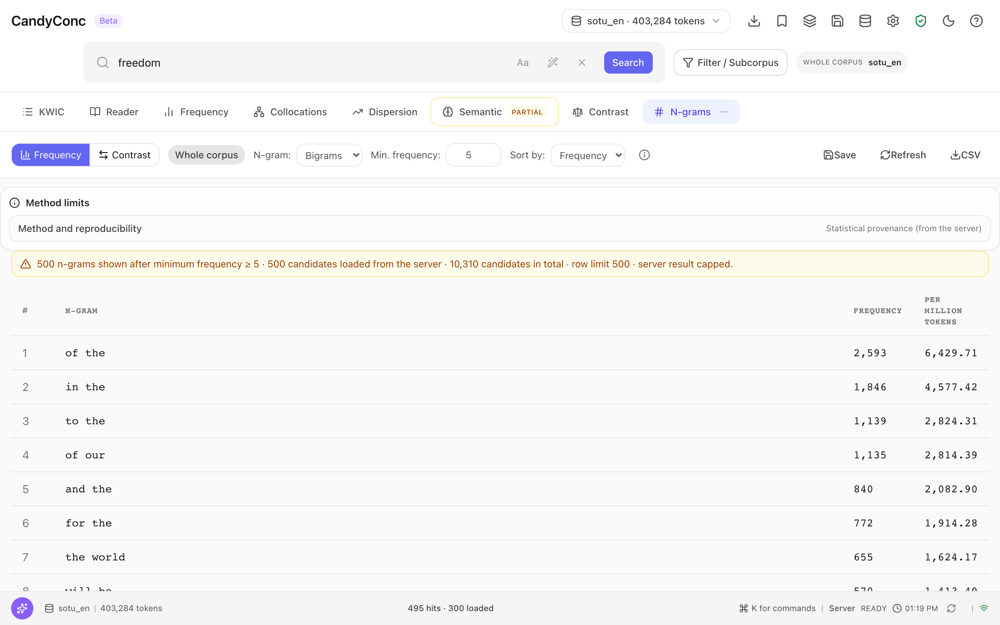

Count n-grams#
An n-gram is a sequence of consecutive word forms. This guide lists the most frequent sequences of two to five word forms in the active scope and opens the lines behind one of them.
Before you begin#
An active corpus. The list counts the active scope, so set a filter or activate a subcorpus first if you want the n-grams of a part of the corpus.
List the n-grams#
Click More in the tab bar.
Choose N-grams.
The view opens in the mode Frequency.
Under N-gram, choose the length: Bigrams, Trigrams, 4-grams, or 5-grams.
Optional: set Min. frequency (default 5).
Optional: under Sort by, choose Frequency or per million.
The table lists the n-grams with their frequency and their rate per million tokens of the scope, punctuation included. In the English sample corpus, the bigrams start with of the (2,593), in the (1,846), and to the (1,139). A line above the table states how many n-grams are shown, how many candidates the server found, and whether the list was capped, for example 500 n-grams shown after minimum frequency ≥ 5 · 500 candidates loaded from the server · 10,310 candidates in total · row limit 500 · server result capped.
An n-gram is counted in the exact spelling of its word forms, within one document, and sequences that contain punctuation are not listed.
Open the lines behind an n-gram#
Click an n-gram in the table, for example United States.
CandyConc switches to the tab KWIC and runs the query
cql:within(<doc>, [word="United"] [word="States"]). The concordance shows
347 hits, the frequency of the row. The query uses within(<doc>, ...),
because n-grams are counted across sentence boundaries.


The line above the table says how many n-grams are shown, how many candidates the server found, and that the list was capped.#
Compare the n-grams of two subcorpora#
The mode Contrast compares the n-gram frequencies of two saved subcorpora. It needs at least two saved subcorpora in the active corpus, see Create and reuse subcorpora.
Click Contrast at the top of the view.
Under Target, choose the target subcorpus.
Under Reference, choose the reference subcorpus.
Click Compute.
The table lists each n-gram with its frequency and its rate per million n-gram positions of the same length on both sides (TARGET F, TARGET PM, REF F, REF PM) and the difference of the rates (Δ PM), sorted by the size of the difference. A document with \(L\) tokens has \(L - n + 1\) positions for n-grams of length \(n\), see Contrast.
Export or save#
CSV downloads the list, Save stores the settings as a saved analysis, and Refresh counts again, for example after you changed the scope.
Result#
You have the most frequent word sequences of the scope and the lines behind each of them. How n-grams are counted, and when a count differs from the number of lines, is described in N-grams and trends.